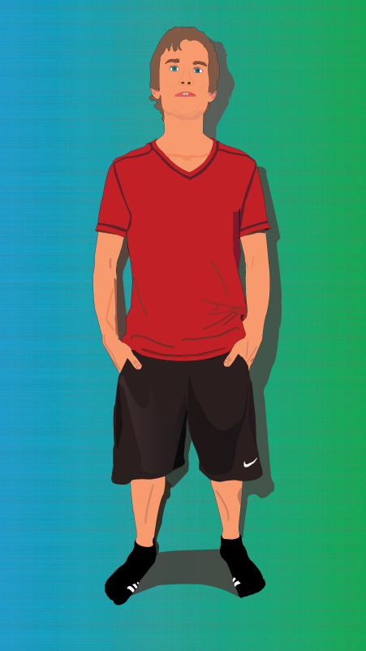

About Me
As a programmer, I love learning new techniques, algorithms, and languages. I find it to be the most exciting part of programming and for me a part of every project I work on. If I knew exactly what I was doing every time I start a project, then there would be no challenge. Recently, I have become increasingly interested in Machine Learning, and have been exploring a variety of python libraries including PyTorch and TensorFlow. I'm excited to graduate from Columbia College Chicago this May with a BA in Application Programming and start my journey into the field of Data Science as I begin pursuing my MS this summer at Lewis University.
Aside from writing code, I also enjoy creating music in my free time. I play a variety of instruments including both electric and acoustic guitar, the electric bass guitar, drums, and synthesizers. I love sound design and spend much of my time creating electronic music for fun. My knowledge and enthusiasm for music and sound design is reflected in much of my work as a programmer. I believe music and technology blend together perfectly in today's modern tech and music industries.
Contact Info
Email: n.chat@comcast.net
Phone: 708-209-5463